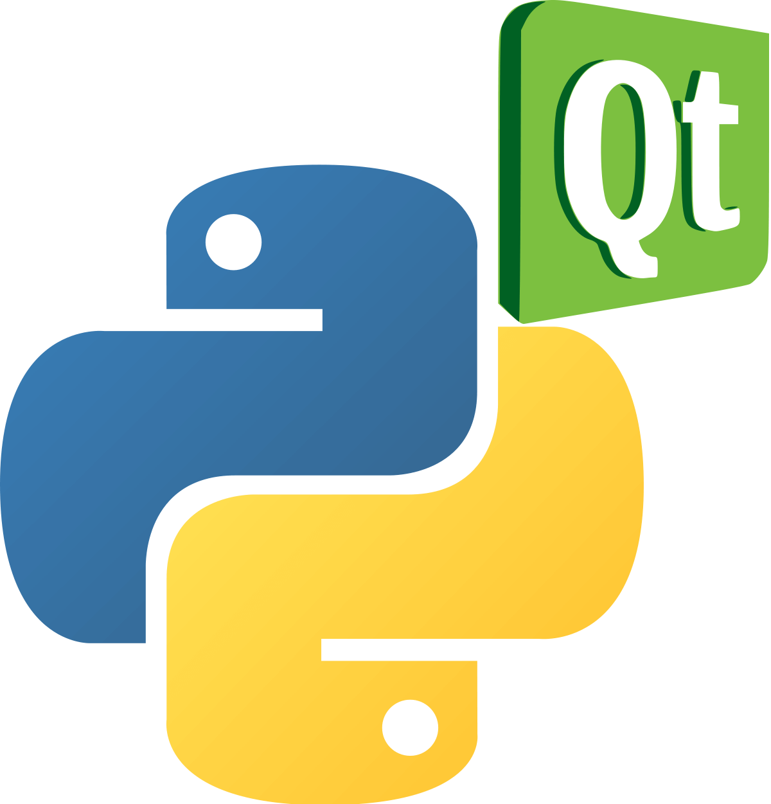

---
redirect_to:" http://Pynaster.website2.me"
---
we take
pride in serving you
Navigate to the Homepage
What are Computer
Programming
Languages?
Computer programming
languages allow us to give
instructions to a computer
in a language the computer
understands.
The portion of the
language that a computer
can understand is called a
binary.
Translating programming
language into binary is known as
compiling.
Each language,
from C Language to Python,
has its own distinct features,
though many times there are
commonalities between programming
languages.
There are dozens of programming
languages used in the industry
today.
I have compiled an overview
of a language that I think would be
helpful in the introduction to computer
programming as it is very easy to learn
and most languages are based on this specific one .
PYTHON
Python is an advanced
programming language that
is interpreted, object-oriented
and built on flexible and
robust semantics.
WHO USES IT?
Professions and Industries:
*Used by employers
in information technology,
engineering, professional
services and design
*Python developers,
software engineers,
back end developers,
Python programmers
Major Organizations:
Google,
Pinterest, Instagram,
YouTube,
DropBox, NASA, ESRI
Specializations and Industries:
Web and Internet development
(frameworks, micro-frameworks and advanced
content management systems);
scientific and numeric computing;
desktop graphical user interfaces (GUIs)
WHAT MAKES LEARNING IT IMPORTANT?
Python lets you work quickly
to integrate systems as a scripting
or glue language. It is also suited
for Rapid Application Develop (RAD).
*
NASA uses Python in
its Integrated Planning
System as a standard scripting
language.
Features:
*Simple to learn and easily read
*Associated web
frameworks for
developing web-based
applications
*Free interpreter
and standard library
available in source or binary
on major platforms
WHERE DID IT START?
Python was developed in
the late 1980s at CWI in
the Netherlands and first
released to the public in 1991.
Tools to run Python on Android
Python has proven itself
as a highly capable language 
for newcomers,
but powerful in the hands of experts.
Why should not you be able to use
Python everywhere that you need to
tell a computer to do something?
And should not your tools exploit
all the capabilities of Python
as a language, not just the bits
that map nicely to a C binding?
Modern computing does not only happen
in an 80x25 console window.
It happens on phones, tablets, and
desktop machines with rich user
interfaces. Should you not be able
to use Python in all those locations,
and exploit the unique capabilities of
those platforms?
End users should not have
to care what language
their tools are written in.
And that starts with looking
and behaving like completely
native tools. Native appearance,
native behavior, delivered in the
way a native app is delivered.
Why should not your Python tools
fit in just as well as a native tool?
There are
a couple of unique ways to
use Python on Android.
1.pyqtdeploy

Pyqtdeploy is a tool
for deploying PyQt applications.
It supports deployment to desktop
platforms (Linux, Windows and OS X)
and to mobile platforms (iOS and
Android).
pyqtdeploy works by
taking the individual
modules of a PyQt application,
freezing them, and then placing
them in a Qt resource file that
is converted to C++ code by Qts
rcc tool. Pythons standard library
is handled in the same way.
pyqtdeploy also generates a Qt pro file
that describes all the generated C++ code.
From this Qts qmake tool is used to generate
a platform specific Makefile which will
then generate a single executable. Further
Qt and orplatform specific tools can then
be used to
convert the executable to a platform specific
deployable package.
pyqtdeploy requires PyQt5 and
Python v3.2 or later to be installed.
PyQt4 and PyQt5 applications
written using Python v2.6 and
later and Python v3.3 and later
are supported.
pyqtdeploy is released under
the BSD license.
2.Qpython
QPython is an
on device script
engine and development
environment.
In most cases, script can get your
jobs done as good as the native
application. Now you can make
it with QPythons help.
QPython is a
script engine
which runs Python
programs on
android devices.
It also can help
developers
develop android
applications.
QPython includes a complete
development kit which help you
to develop programs with mobile
provides regular Python console
3.Termux
Termux is an
Android terminal
emulator and Linux
environment app that
works directly with no
rooting or setup required.
A minimal base system is installed.
Additional packages
are available using the APT package
manager.
Although
Androids primary
programming language is Java,
there is no known port of Python
to the platform. Android support
in BeeWare is achieved using VOC,
a tool that compiles Python source
code to Java class files.
This allows Python code to be
executed as a native binary on
the JVM.
Python/Wiki
What I use for Python programming on my Android 7.0
I am currently using
pydroid 3 which
I think is very dynamic.It
basically requires no set up
and is accessible on
Google PlayStore.
IF YOU LIKE WHAT I AM DOING
PLEASE DONATE AS LITTLE AS YOU CAN TO MY
PayPal account
my paypal email
is edwinnoko20@gmail.com
From Me at Pynaster
"Have a great
time exploring the
fascinating world of Python."
If you want YouTube tutorials on
basic Python
programming Click here
And if
you have
any pointers
contact me
on the
same email
Want to be a Pynaster member
subscribe to my YouTube channel
for more Python
tutorials or
My other YouTube channel for Termux tutorials
THIS WEBSITE WAS CREATED USING HTML AND CSS BY EDWIN SHAKU.
Find out more about us